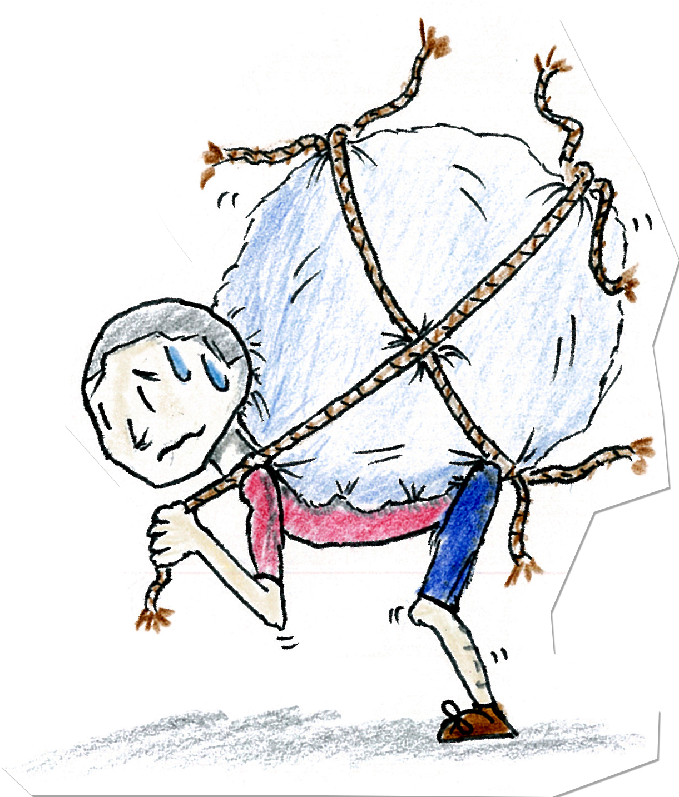

This kanji depicts a person bearing a
heavy sack. It can represent both physical weight
or emotional weight. The Japanese meanings of かさねる
and かさなる mean to "stack, pile up or overlap" and
the reading え is one instance in a stack, e.g.,
紙一重(kami hito e), "paper thin" is literally
one一 sheet重 of paper紙.